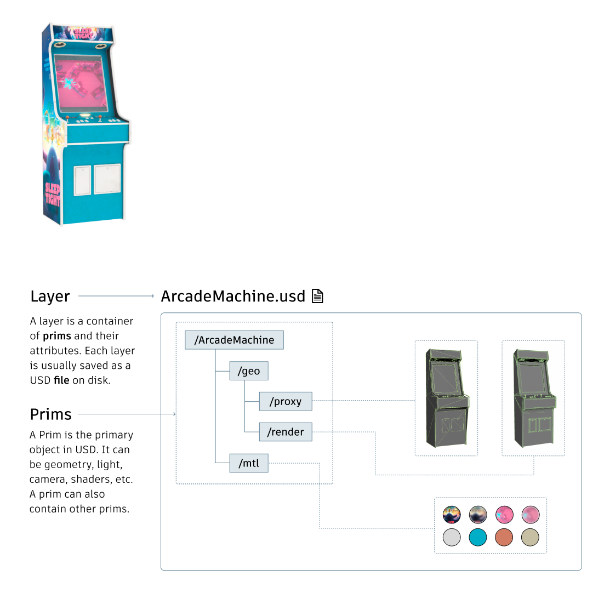
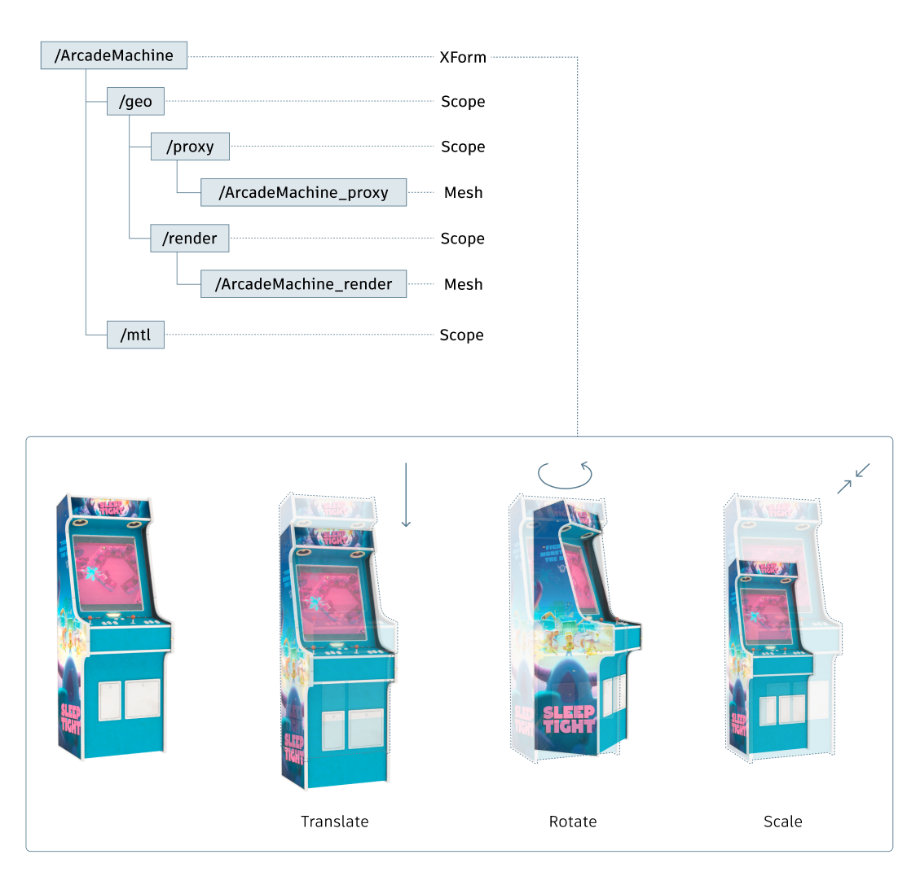
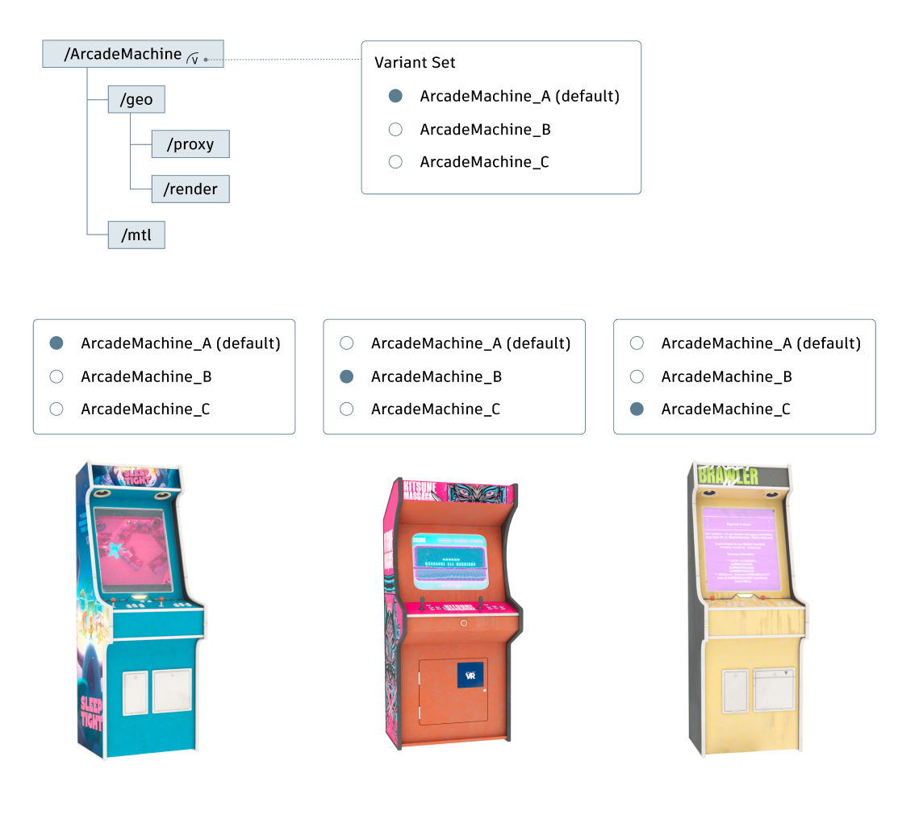
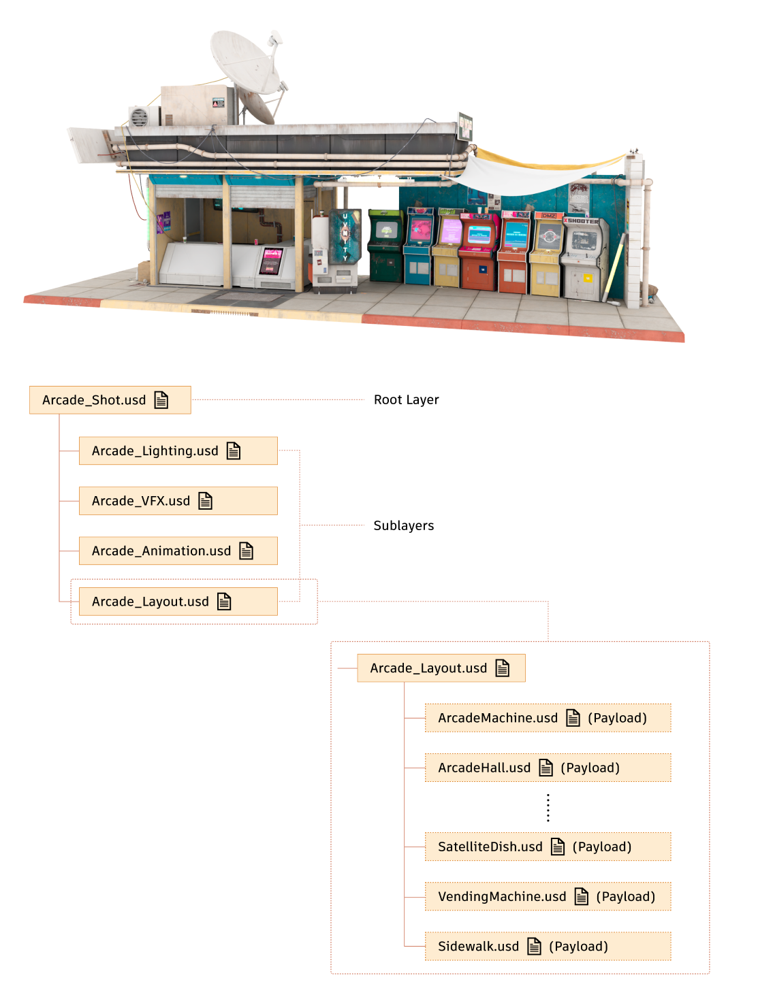

USD terminology and composition
The following is a list of commonly used USD terms. The diagrams below use a component and scene created in USD to help you get familiar with the USD terms and its basic structure.
- Stage – A loaded scenegraph, which can contain multiple Layers.
- Prim (Primitive) – The primary object in USD. There are various types of prims, such as geometry, lights, cameras and shaders. A prim can also contain other prims.
- Opinions – The basic elements involved in determining the values in USD. For example, when you author a value for an attribute of a prim, you are expressing an opinion for that prim.
- Layer – A container of prims and opinions. Each layer is usually an indivisual usd/usda/usdc file on disk. Layers are composed together to represent a complete stage.
- Composition – The process of assembling multiple layers together by the composition arcs that relate them to each other, resulting in a Stage scenegraph of Prims.
- Composition arcs – the "operators" that allow USD to create rich compositions of many layers that contain mixes of "base" scene description and overrides. The six kinds of arcs are subLayers, inherits, variantSets, references, payloads, and specializes (a subset of inherits).
- Payload - a referenced USD file or prim that can be selectively loaded or unloaded to optimize performance.
- Instancing - There are two methods for creating USD instances: marking a prim as "Instanceable" or using a PointInstancer. Instancing significantly improves the efficiency when populating a stage with multiple copies of an object. See OpenUSD's Scenegraph Instancing and PointInstancer for more information.
- Proxy – A prim paired with model that can be used as a level of detail (LOD) stand-in while still allowing inspection of the full model.
USD component
The following diagram shows an example of the structure of a USD component. The prim ArcadeMachine has two children, geo and mtl, which store the geometry and materials, respectively. The prim geo has two children, proxy and render, which store the low-res and high-res meshes for proxy and render purposes.

Prim types
Prims come in a variety of types, such as XForm, scope, mesh, shader, light and camera. Among them, XForm contains transform data that can be used to translate, rotate and scale other prims; and scope serves as a container for grouping other prims without applying any transformation.

Variants
A prim can store multiple variants, allowing easy switching between them. Variants can be organized into variant sets.

USD shot
A shot is usually composed of a root layer and several sublayers, each dedicated to a specific division of the pipeline, such as layout, animation, VFX, or lighting. Each sublayer references USD components as payloads. Instancing is often used when laying out a scene with multiple copies of an object. In the example below, only one arcade machine is loaded, while the others are instances of the same prim.

USD terms in Maya UI:
- Anonymous Layer – An unsaved, newly created layer. Maya allows for layers to temporarily exist without a file on disk.
- proxyShape – A leaf node in the Outliner DAG that the USD stage is attached under. Operations to the Proxy node trigger UFE calls to interact with Maya and USD.
For further reading, see Pixar's Introduction to USD and Pixar USD Glossary.